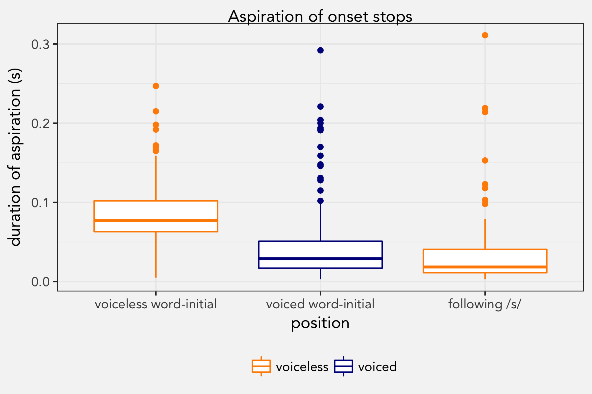
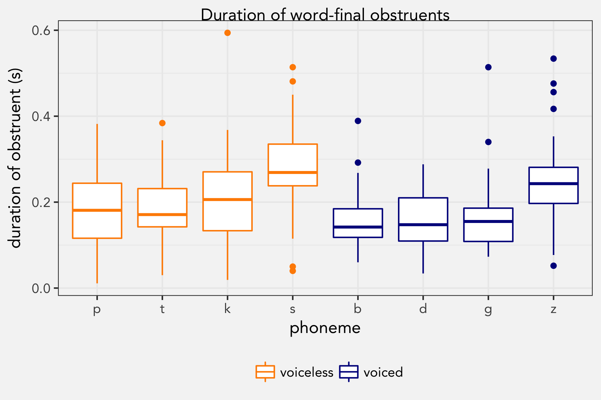
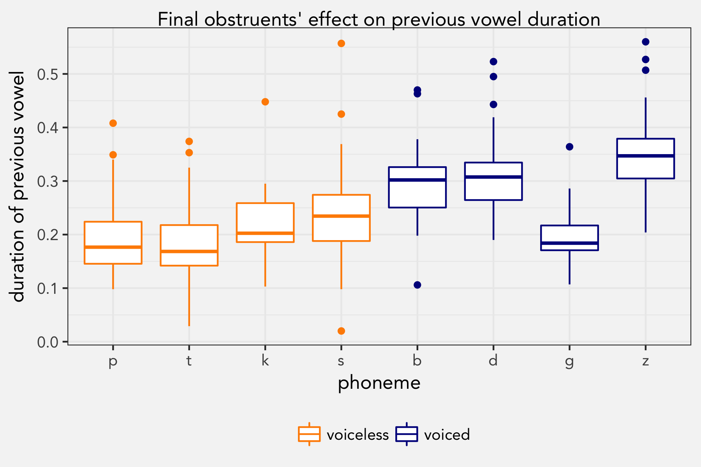

So I’m teaching phonetics and phonology this semester and we’re using Ladefoged & Johnson’s A Course in Phonetics textbook. As I was preparing to teach about stops, I thought it might be a good idea as a homework assignment for students to gather their own data to see if some of these ideas panned out. Here’s my quick study.
Hypotheses
The four hypotheses I wanted to test come from Chapter 3 from my 6th edition of A Course in Phonetics:
Word-initially, /p, t, k/ have longer aspiration than /b, d, g/.
After onset /s/, /p, t, k/ have about as much aspiration as word-initial /b, d, g/.
Word-finally, voiced obstruents have an overall longer duration (closure + burst + aspiration) than voiceless obstruents.
Vowels preceding voiced obstruents are longer than those preceded by voiceless obstruents.
Methods
Each student was asked to record a friend reading the following words: tack, soap, days, pad, steep, sit, code, tab, bees, scope, dice, goes, bus, seep, cab, spit, gas, peg. I chose these words to maximize onset and coda obstruents in as few words as possible. Vowel quality is assumed to have no effect.
For stops, student measured durations of aspiration and closure; for fricatives it was duration of the fricative itself. This was done in Praat. They have worked with Praat once before in this course, and were taught how to identify boundaries for these, but were otherwise relatively untrained linguistics undergraduates. I provided them with a template spreadsheet to fill out.
I ended up with measurements from 432 words: 18 unique words each from 24 students. I then combined the spreadsheets and wrote up the R code.
Results
Word-initial stop aspiration
The first hypothesis is one that is commonly taught in intro to linguistics courses: word-initial voiceless stops have aspiration and word-initial voiced stops have little, if any. In my data, this turned out to be the case based on the words pad, peg, tab, tack, cab, code, bees, bus, days, dice, gas, and goes.

A mixed-effects regression model that predicts this aspiration with the underlying voicing of the stop as a fixed effect and student and word as random effects suggests that this difference is significant.
summary(lmer(aspiration ~ underlying_voicing + (1|student) + (1|word), data=wi_stops))
Random effects:
Groups Name Variance Std.Dev.
student (Intercept) 1.039e-03 0.03224
word (Intercept) 9.550e-06 0.00309
Residual 1.084e-03 0.03293
Number of obs: 285, groups: student, 24; word, 12
Fixed effects:
Estimate Std. Error t value
(Intercept) 0.047309 0.007241 6.534
underlying_voicingvoiceless 0.037331 0.004291 8.699Conclusion: Yep. Based on this data, the model predicts that voiced stops get around 47ms of aspiration while voiceless stops get about 85ms. Cool.
Stops following /s/
We learn that voiceless stops following /s/ in the same syllable are not aspirated in English. In our sample, this also proved to be correct based on the same words as above with the addition of spit, steep, and scope.

I ran a mixed-effects regression model like the one described above but with position (=environment) as the main effect and voiced word-initial stops as the reference level.
summary(lmer(aspiration ~ position + (1|student) + (1|word), data=onset_stops))
Random effects:
Groups Name Variance Std.Dev.
student (Intercept) 0.001153 0.03395
word (Intercept) 0.000000 0.00000
Residual 0.001150 0.03391
Number of obs: 355, groups: student, 24; word, 15
Fixed effects:
Estimate Std. Error t value
(Intercept) 0.047309 0.007485 6.321
positionvoiceless word-initial 0.037395 0.004019 9.304
positionfollowing /s/ -0.007779 0.004948 -1.572We get the same coefficients for word-initial stops. Only this time, we can see how stops followed by /s/ fit in. The model shows that the duration of aspiration was not significantly different from word-initial voiced stops. There’s some indication that the stops following /s/ have even less aspiration, but this didn’t reach significance.
Duration of word-final stops
What I didn’t know before preparing for this class was that the overall duration of word final stops (closure + burst + aspiration) is longer for voiceless obstruents than it is for voiced obstruents. Based on all 18 words (scope, seep, soap, steep, sit, spit, tack, cab, tab, code, pad, peg, bus, dice, gas, bees, days, goes), this was true.

The difference is small but significant: in a mixed-effects regression model that predicts duration with voicing and manner of articulation as fixed effects and student and word as random effects, the difference reached statistical significance.
summary(lmer(duration ~ underlying_voicing + manner + (1|student) + (1|word), data=wf))
Random effects:
Groups Name Variance Std.Dev.
student (Intercept) 3.002e-03 0.054790
word (Intercept) 3.745e-06 0.001935
Residual 7.550e-03 0.086893
Number of obs: 427, groups: student, 24; word, 18
Fixed effects:
Estimate Std. Error t value
(Intercept) 0.194404 0.012836 15.145
underlying_voicingvoiced -0.035321 0.008540 -4.136
mannerfricative 0.096638 0.008976 10.766
This model shows that the voiceless stops were about 194ms long, and voiced stops were 159ms (35ms shorter). Furthermore, and I didn’t expect this until I saw the plot, fricatives were generally about 97ms longer than stops. I don’t do a lot of nitty-gritty phonetics work like this too often, especially on consonants, so this was news to me.
Vowel length
Finally, it is pretty well known that vowels before voiced obstruents are said to be longer than vowels before voiceless obstruents. As expected, the data showed this to be the case.

One last regression model, similar to what was done previously, showed not only that this voicing difference is significant but that the manner of articulation mattered as well.
summary(lmer(vowel ~ underlying_voicing + manner + (1|student) + (1|word), data=wf))
Random effects:
Groups Name Variance Std.Dev.
student (Intercept) 0.001937 0.04401
word (Intercept) 0.001114 0.03337
Residual 0.002274 0.04769
Number of obs: 431, groups: student, 24; word, 18
Fixed effects:
Estimate Std. Error t value
(Intercept) 0.18905 0.01513 12.495
underlying_voicingvoiced 0.09595 0.01654 5.799
mannerfricative 0.05349 0.01744 3.067Here, we see that vowels followed by voiceless stops are predicted to have a duration of 189ms. If the following segment is voiced, the model predicts it to actually be 285ms (an increase of 95ms). What stands out is that vowels followed by /g/ were quite a bit shorter. Due to an oversight in my data, there was just one /g/-final word, peg, and it was listed last on the stimulus. No doubt this had an effect. In fact, a more rigorous study that would include more tokens and randomization might find the difference to be even greater, assuming /g/ falls more in like with /b/ and /d/.
I learned something new here as well: fricatives lengthen the vowel even more. The model predicts that vowels preceding fricatives will be 53ms longer than stops with the same voicing. I didn’t know that.
Conclusion
This study was short, unsystematic, and full of methodological issues. Despite its flaws, it shows evidence to support what Ladefoged and Johnson say in A Course in Phonetics. I also learned a few things: in addition to themselves being longer than stops, fricatives cause their preceding vowels to lengthen as well.
Special thanks goes to my Fall 2017 LING 3060 class at the University of Georgia, who bothered their friends with this silly assignment and painstakingly measured durations in software they barely know how to use.